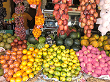
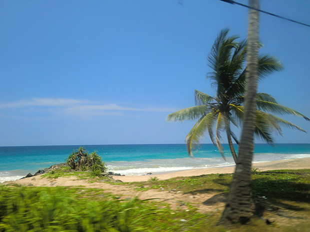
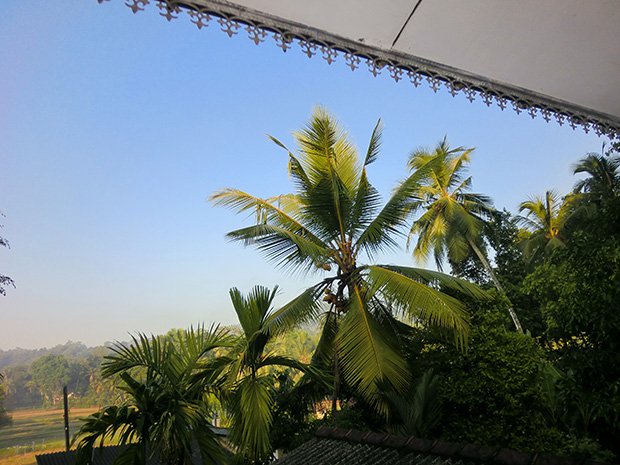

「料金の安さとスリランカという国をホームステイをして知りたいと思ったため参加を決めました。
スリランカとはどのような国なのか全く知りませんでしたが、詳しい説明と的確なアドバイスを頂いたので全く問題ありませんでした。
英語の先生と一緒にスーパーマーケットへ行ってスパイスや野菜の説明をしてもらったり、お寺へ行ったりして非常に楽しかったです。 宿題は特にありませんでした。
スリランカでのホームステイは、のどかな自然の中での生活は最高でした。
美しいヤシの木や鳥の鳴き声に癒されました。
ご飯もおいしく、毎日新しい経験をして、夢のような時間を過ごしました。
ホストファミリーにこんなにも親切に、大切にして頂けるとは思ってもいなっかたので本当に感謝しています。
とっても優しくて楽しい方でした。


空いている時間に日本語教師のボランティアをしました。
日本の歌を歌ったり、折り鶴を折りました。
優しい先生方、人懐っこい子供たちと楽しい時間を過ごしました。
子供たちは様々な質問をしてくれました。
帰る時、『帰らないで。もっとここにいて。』と子供たちが言ってくれたので泣きそうになりました。
この体験は一生忘れません。
低開発村視察に行く前は、貧しくて大変な生活をしておられるのかと思っていましたが、みんな素敵な笑顔でいきいきとされていたので、自給自足のシンプルライフも素晴らしい生活になると思いました。
スリランカへ行く前は発展途上国で衛生状態も悪く、少し暗いイメージがありました。
しかし、全くそんなことはなく、思っていたよりも清潔で、スリランカの人達はいつも笑顔で親切でした。
おいしい食事、家族やご近所との強い絆、そして美しい自然の中での暮らしで充実した生活を送っておられるように思いました。
日中の日差しはきついので日傘を持って行って役に立ちました。
現地の人たちも日傘を使っていました。

スリランカの親切な人達や美しい自然のなかでの生活で、この国が大好きになり、住みたいと思いました。
今まで行ったどの国よりも素晴らしかったです。

以前、アイルランドで２週間のホームステイをしましたが、スリランカのホストファミリーの方々の様に大切には扱ってもらいませんでした。
スリランカでは英語の授業がマンツーマンのため、買い物や料理など生活のなかでのレッスンで他の国では体験できない貴重なものでした。
またスリランカへ行きたいです。
１０日間では全く足りませんでした。
毎日楽しく時間が経つのはあっという間でした。
帰る日が近づくにつれ、悲しくなりました。
またBeインターナショナルさんに是非お願いしたいです。
行く前に様々なアドバイス、注意すべきこと教えて頂いたので現地では気をつけて行動し、安全に過ごせました。
現地受入団体のマーネルさんには、常に気を使って頂き、すべてのことにおいて丁寧に説明して頂いたので大変感謝しています。
貴重な体験をし、非常に楽しむことができました。」